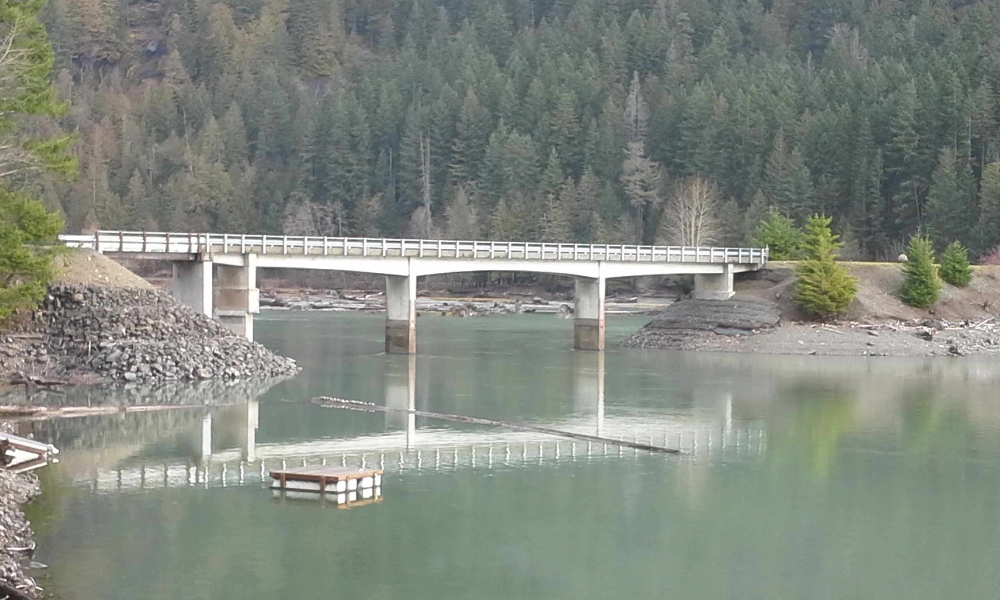
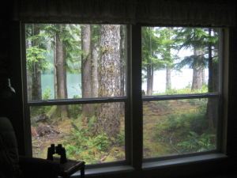
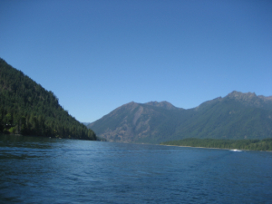
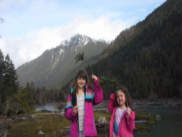

These are the early years at the start of our Cushman journey.
The Early YearsThis references the years of our family starting individual lives, as well as adding spouses and children.
Married with ChildrenThis is the final chapter of our family memories at Lake Cushman.
Final Years